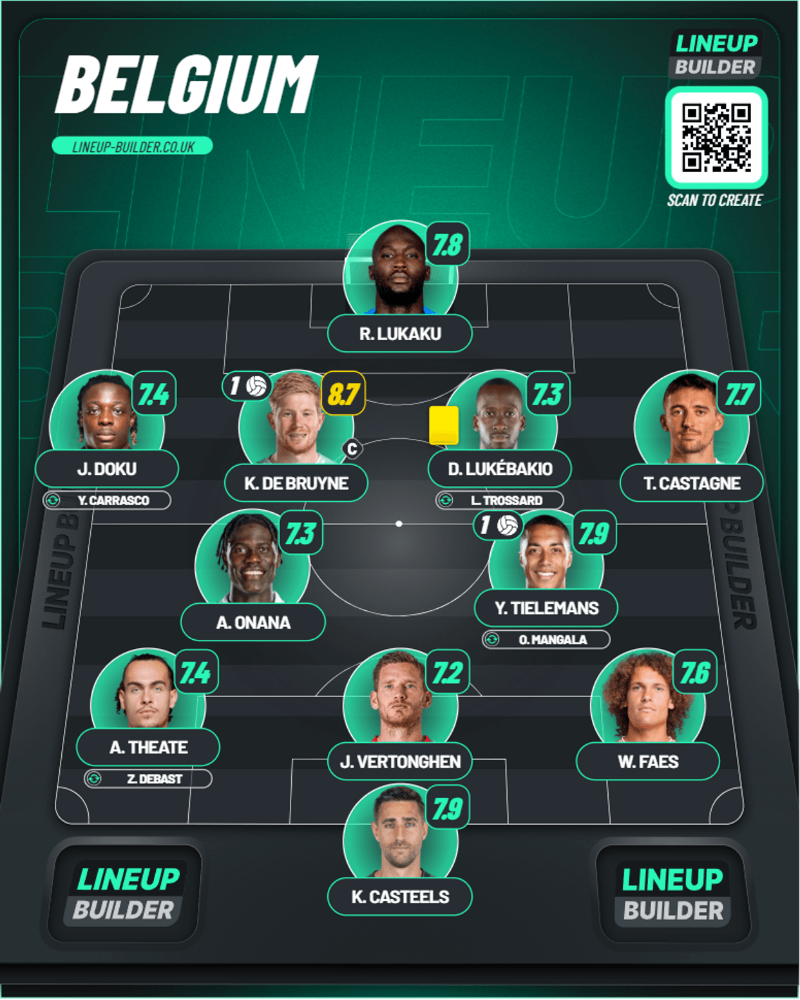
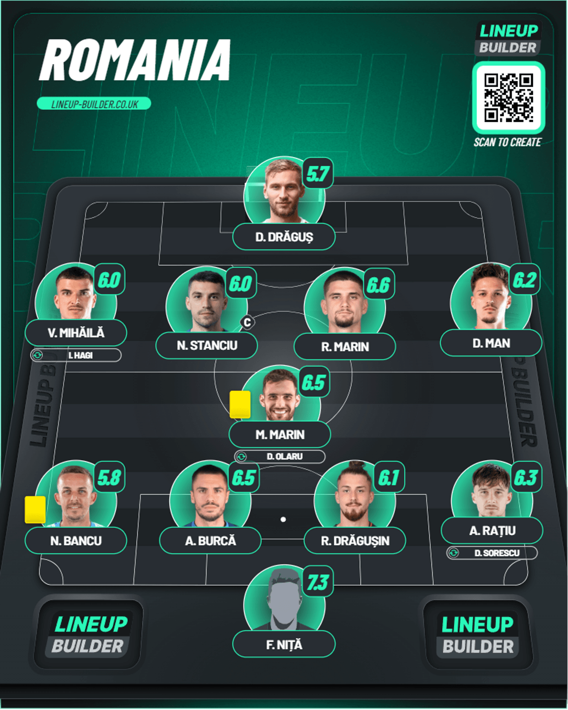
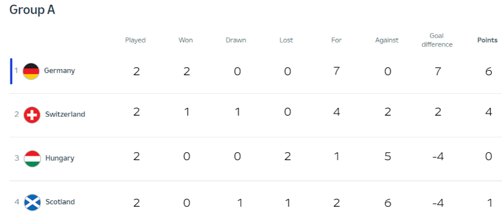
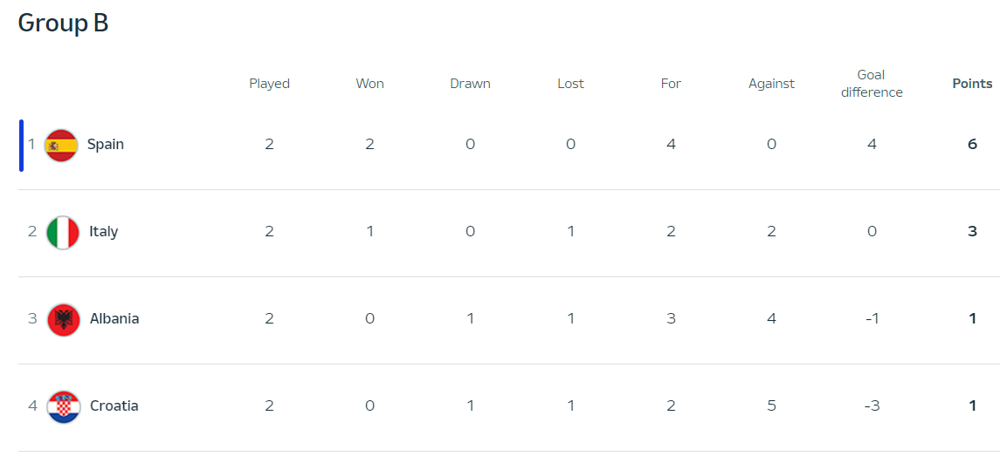
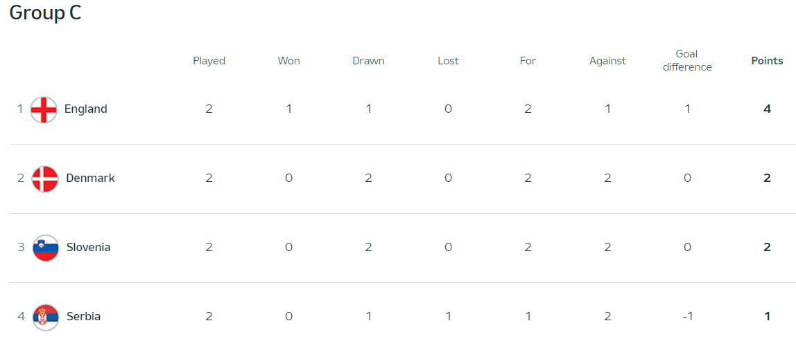
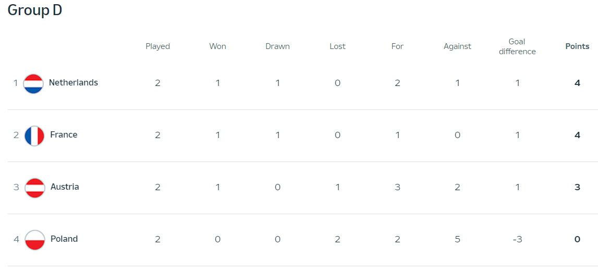
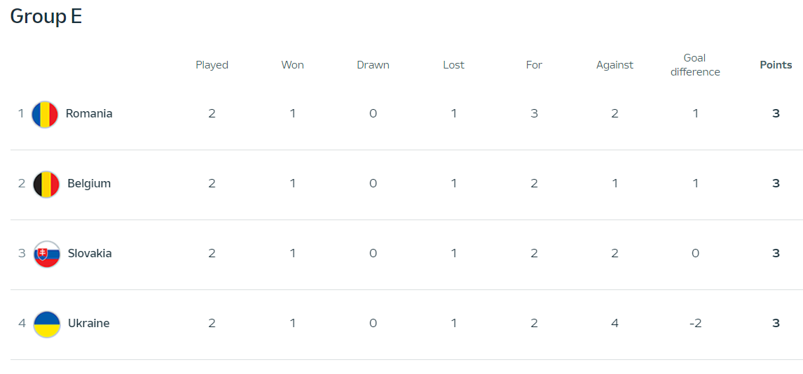
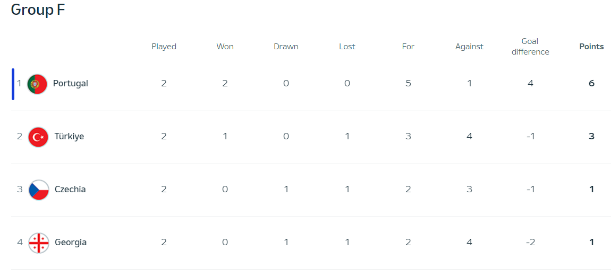
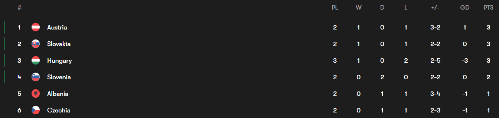

Day 9
Table of Contents
Day 9
Belgium v Romania
Brilliant De Bruyne. Lukaku just can’t get any luck. Belgium finally turned up. It’s good to see Belgium finally turn up and with this result now EVERY team in Group E is now level on points going into the final matchday so final matchday over there is going to be exciting.
1st Half
Belgium got off to a flyer after just 75 seconds when Tielemans won the ball back and it was played on the left side where the cross came to Lukaku who held it up pretty well before laying it off for Tielemans who found the left side of the goal brilliantly. A cracker start for Belgium. Belgium had to stay alert though when Dragusin won the header from a Romania corner but Casteels was able to tip the ball behind. Romania had to stay alert when Lukaku had a chance to turn and get a shot away in the penalty box but the defense was alert and they blocked it. There was a superb save from the Romania keeper when De Bruyne found Lukebakio and tried to curl in a great left footed strike but the keeper was equal to it.
2nd Half
Romania were eager to try and get back and they tried. Minute 48 when Mihaila went through unopposed through the Belgian defense but he dragged it wide of goal before blazing it over. De Bruyne almost made it 2-0 when in minute 53 when he curled just past the far post from the edge of the box. He again put in a really great ball across the penalty box but Doku just couldn’t get a touch. Lukaku thought he finally got his first goal of this Euros after missing big chances and getting 2 goals ruled out against Slovakia after he finished off a brilliant through ball from De Bruyne but it was AGAIN ruled out for offside and if they wouldn’t have been ruled out, he’d actually be top scorer 😭😭. Lukaku was denied again this time by the Romania keeper. He just couldn’t force the effort home. Romania had a golden chance when Dennis Man when he took the keeper on himself when he had better options and Casteels was equal to it. In the end it was De Bruyne who made it 2-0 straight from their own goal kick when it caught the defense out and he held off the challenge from Dragusin and got the touch past the onrushing keeper to make it 2-0 finally. Trossard had a shot to give the pass to a teammate but his first to Lukaku was cut by the defense and the second by De Bruyne was overhit. In the end, Romania tried their hardest but Belgium finally turned up on this day and managed to get the 3 points.
Player of the Match - K. De Bruyne
A masterful performance. He wasn’t able to get into the game against Slovakia but here he was able to show his class. Took his goal very well and was constantly doing so much to try and set up others as well as they played really well entirely.
Lineups
Belgium

Romania

Group Standings after Matchday 2
Group A
Had to edit because Matchday 3 had been done 😅

Group B

Group C

Group D

Group E

Group F

Best 3rd placed teams
